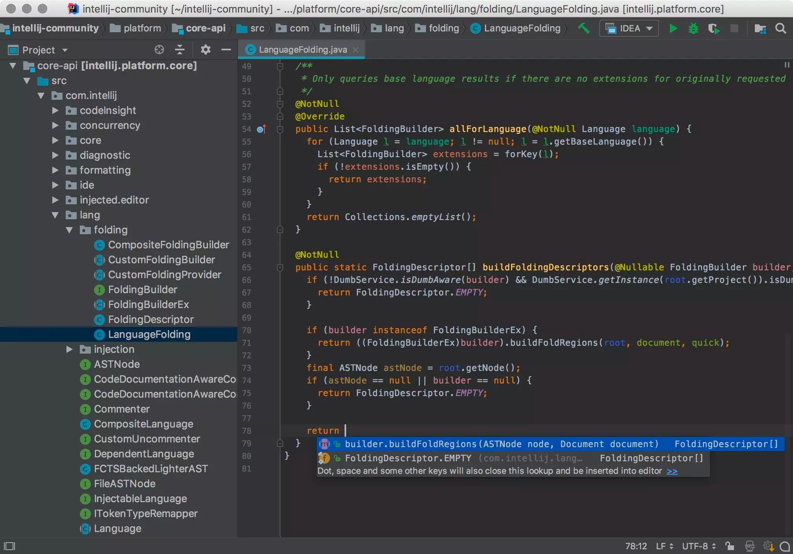
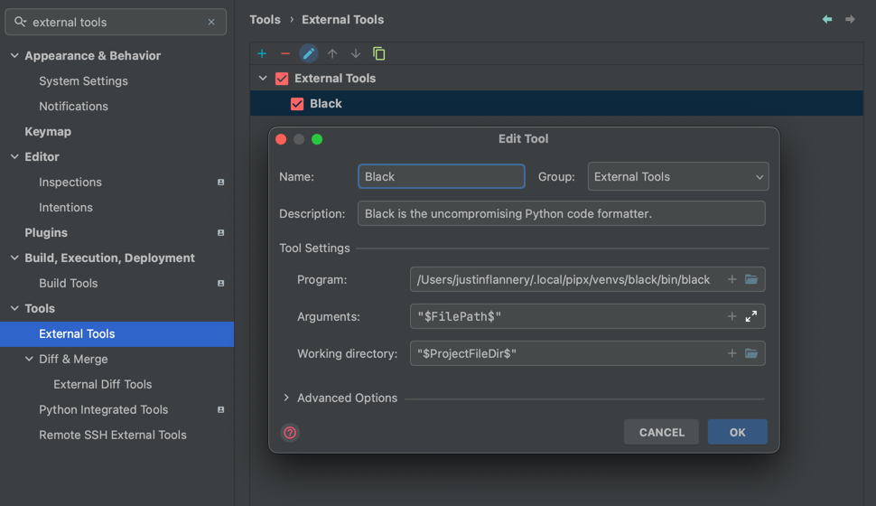

IDE#
This guide recommends the use of JetBrains IDE products (IntelliJ or PyCharm)
Install JetBrains IDE of Choice:
Download the JetBrains Toolbox to download and manage IDE applications

Plugins#
I like to start off by sorting JetBrains plugins by downloads. To do this I go to Settings -> Plugins
-> Marketplace -> /sortBy:downloads
JetBrains App Functionality Plugins#
PythonDatabase Tools and SQL
JetBrains Productivity Plugins#
.ignoreMaterial Theme UICSVRainbow Brackets.env files supportTomlSonarLintAtom Material IconsGitToolBoxRequirementsReStructuredTextBigDataToolsPydanticFoldable Project View
Pre-Installed Productivity Plugins#
Settings Files#
There is a zip file at jetbrains/settings.zip that contains the base settings for JetBrains IDEs. See the JetBrains Documentation for more information.
JetBrains Settings#
Most of these settings can be imported from the jetbrains/settings.zip file.
Git Commit UI#
Use the traditional Git Commit UI
IDE Setting -> Version Control -> Commit -> Use non-modal commit interface
KeyMap#
These KeyMap settings are done with a full-length desktop keyboard in mind.
F19:Run File in Python ConsoleF16:Refactor: RenameThis is in addition to the default (
⇧+F6) keymap
(
⌘+⇧+P): Git Pull
Default Keymaps Worth Mentioning:
(
⌘+⇧+K): Git Commit(
⌥+⌘+L): Reformat Code(
⌘+B): Jump to Usages / Definition
Reformat Files with Black#
Black is an auto-formatter for Python code. It’s non-customizable by design. Blackened code looks the same regardless of the project you’re reading. Formatting becomes transparent after a while and you can focus on the content instead.
Install Black
pipx install "black[jupyter]"
Setup JetBrains IDE to use Black
I also recommend adding a keymap at F13 for running Black.
